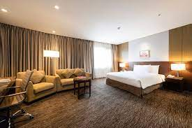
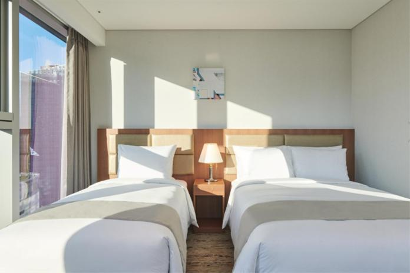
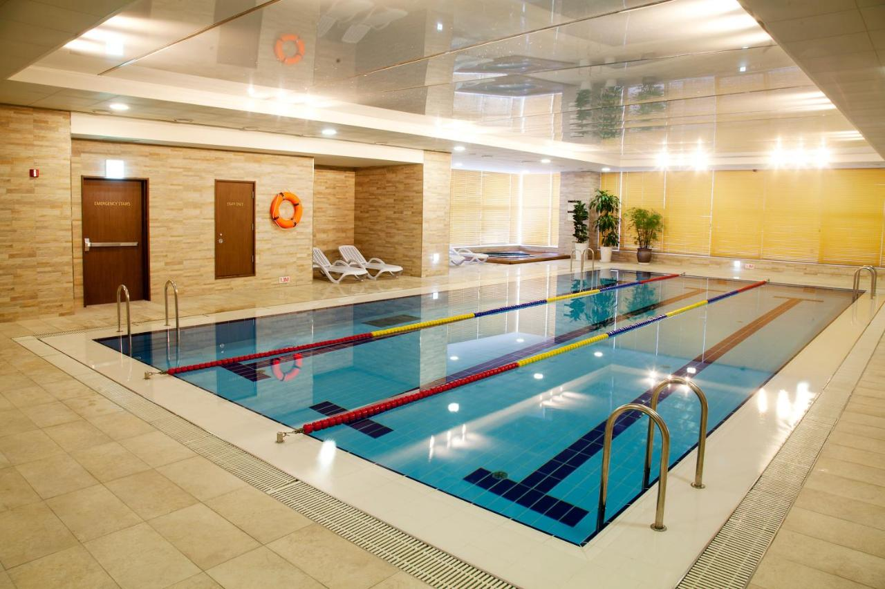
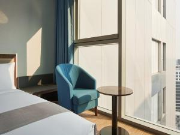
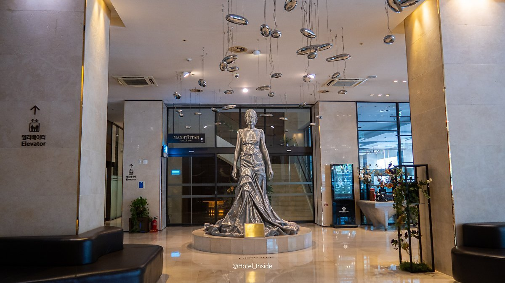
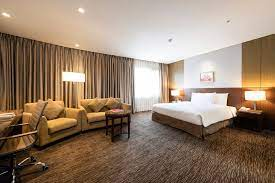
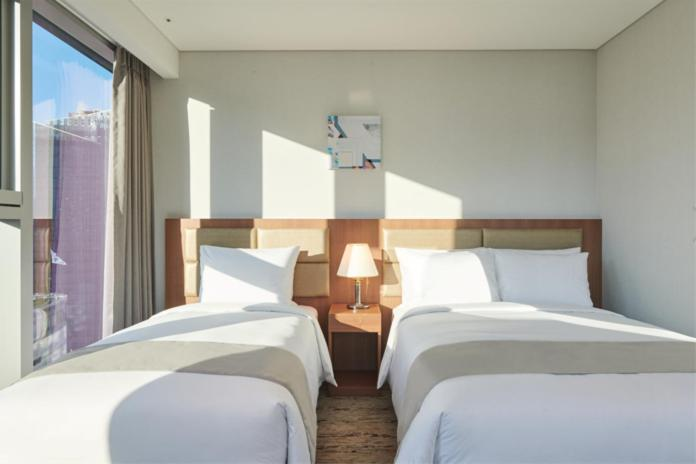
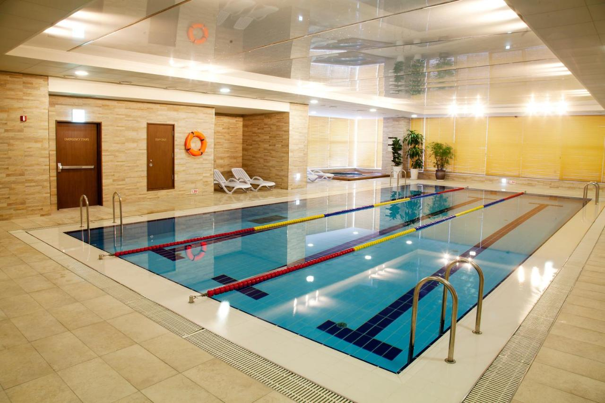
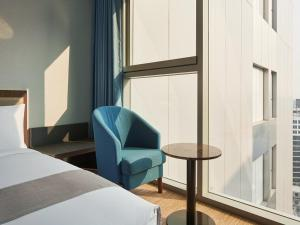
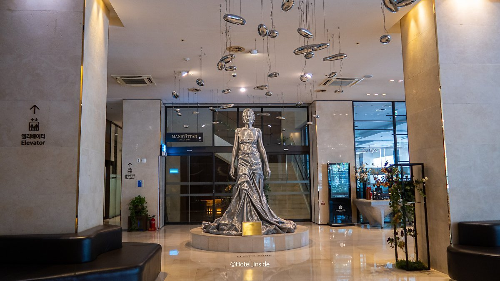

관광지 정보
 









스탠포드 호텔 서울
- 장소 : 서울특별시 마포구 월드컵북로58길 15
- 전화 : 02-6016-0001
- 체크인 15:00 ㅣ 체크아웃 11:00
상세설명
인천국제공항 30분, 김포공항 15분, 일산 킨텍스 20분, 서울 중심으로부터 30분 거리에 위치 국제도시 서울의 새로운 명소 상암동 디지털미디어시티에 위치한 스탠포드호텔 서울
자세히보기
자세히보기
자세히보기
자세히보기
자세히보기
자세히보기
1.JPG)